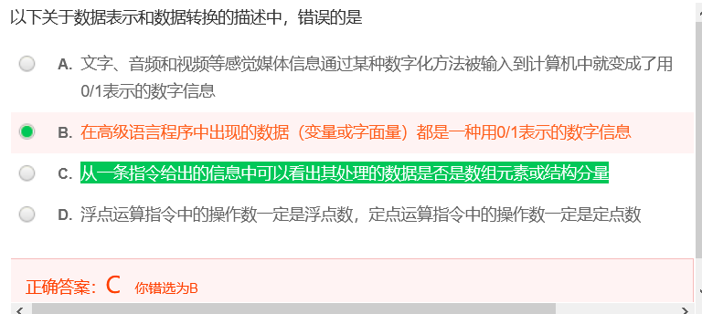
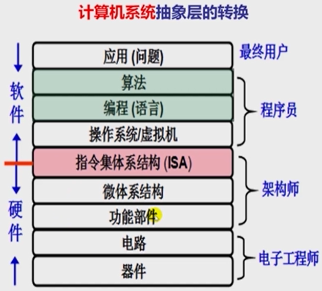
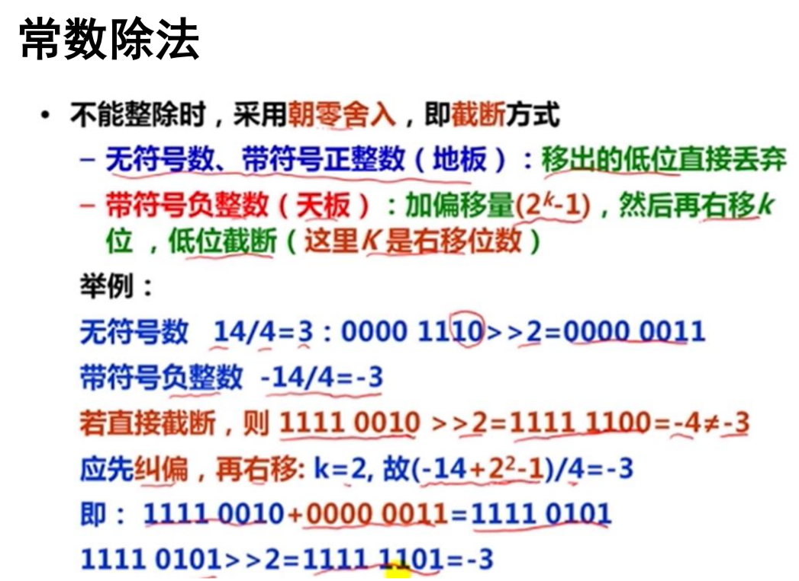

【考研黑书向】深入理解计算机系统CSAPP¶
【写在前面】¶
问题¶
- 机器数、原码、反码、补码等等xx码的区别、联系和计算
- 算术右移和逻辑右移
- 信息表示和处理 位、整数 巧用无符号数：向下计数，看不懂
- 信息表示和处理 位、整数 大小端举例，0xfffffea0的值的计算
参考¶
-
第一周 计算机系统概述
- 计算机层次结构
-
第二周 数据的表示和存储

-
CSAPP课本
Part Zero 计算机系统的基本概念¶
计算机系统的层次结构¶
计算机系统抽象层的转换¶

- 整个计算机系统分为软件系统和硬件系统
- 功能转换：上层是下层的抽象，下层是上层的实现，底层为上层提供支撑环境
- 交界处为指令集体系结构ISA，实际上是作为软硬件交互的接口，即对硬件的抽象，这种抽象提供的功能为软件所用
- ISA是计算机组成的抽象
- ISA具体介绍
- 程序执行的结果取决于：
- 算法、程序的编写
- 语言处理系统
- 操作系统
- ISA
- 微体系结构
- 以及其他底层的东西等
- 重点在高级语言以下各抽象层
- C语言程序设计层
- 数据的机器级表示、运算
- 语句和过程调用的机器级表示
- 操作系统、编译和链接的部分内容
- 指令集体系结构(ISA)和汇编层

- 指令系统、机器代码、汇编语言
- 微体系结构及硬件层
- CPU的通用结构
- 层次结构存储系统
计算机系统层次¶
语言发展不断“抽象”，创造出不同的计算机系统的层次
| 最早 | 发展 | 现代 |
|---|---|---|
| 计算机用机器语言编程 | 计算机使用汇编语言编程 | 现代计算机用高级语言编程 |
| 机器语言：第一代程序设计语言(First generation programming language, 1GL)，即用0和1编写程序 | 汇编语言：第二代程序设计语言(Second generation programming language, 2GL)，是一种符号表示 | 1. 第三代程序设计语言(3GL)为过程式语言，编码时需要描述实现过程(“如何做”)；2. 第四代程序设计语言(4GL)为非过程式语言，编码时只需说明“做什么”，不需要描述具体的算法实现过程 |
| 用机器语言0和1编写的程序可以 直接运行在机器上，指令集体系结构是将计算机的硬件抽象成指令集，每条指令对应应用程序中的指令，通过这些指令我们可以使用计算机硬件 | 我们用汇编语言编写的程序必须由汇编程序转换为机器指令，才能在机器上执行执行；用汇编语言来编写程序，必须要有和机器交互的界面，由操作系统提供和封装 | 高级语言必须转换成机器指令构成的机器语言才能在计算机上执行，转化功能由语言系统中的语言处理系统完成；语言处理系统包括：各种语言处理程序(编译、汇编、链接)和运行时系统(库函数、调试、优化等)；操作系统包括人机交互界面和提供服务功能的内核例程 |
 |
 |
计算机系统的不同用户¶
程序生成与运行的基本原理与工作过程¶
计算机系统的分析评价方法¶
Part One 程序结构和执行¶
1.信息的表示和处理¶
1x00¶
- “转换”的概念在数据表示中的反映

- 机器级数据
- 数值数据
- 整数(定点数，定点运算指令) - 无符号整数、有符号整数
- 实数(浮点数，浮点运算指令) - 浮点数
- 非数值数据
- 逻辑数，包括位串
- 西文字符和汉字
1x01 位¶
- 位 / 比特
- 字节
1x02 进制¶
- 二进制
- MSB / LSB
- 用二进制编码的原因
- 物理器件
- 编码、计数、运算规则简单
- 逻辑运算
- 十六进制
- 进制转换
- 10转k进制
- 整数：除法-除基取余法
- 小数：乘法-乘基取整法
- k转10进制
- 按权展开
1x03 位级运算¶
- 布尔代数
- C语言中的
- 位级运算
- 异或
- 逻辑运算
- 移位计算
1x04 整数编码¶
机器数、原码、反码、补码等等xx码的区别以及联系¶
机器数
- 概念：用0和1编码的计算机内部的0/1序列
- 数在计算机中的表示形式 / 机器能识别的形式
- 带符号：最高位0表示非负数，1表示负数
- 例子：假设机器字长为8位，则1表示为[00000001]，-1表示为[10000001]，其中00000001和10000001是机器数
原码
- 就是机器数
- 符号(最高位)+绝对值
反码
表示
正数的反码是其本身
负数的反码是符号位不变，其他位取反
例子
假设机器字长为8位，则[+1]=[00000001]原=[00000001]反；[-1]=[10000001]原=[11111110]反
补码
表示
正数的补码是其本身
负数的补码在反码的基础上+1 -> 其实也是
负数A[补]=模-绝对值(A)例子
假设机器字长为8位，则[+1]=[00000001]=[00000001]原=[00000001]反=[00000001]补；[-1]=[10000001]原=[11111110]反=[11111111]补
出现时期：原码 < 反码 < 补码
有了原码为什么还出现了反码？
-
计算机辨别和处理符号位困难
-
计算机只需要实现加法，把减一个数变为加上这个数的负数：1-1=1+(-1)，即让符号位参与运算
-
按照正常的加法规则，原码的方式无法实现正数和负数的加法，一套用于正数+正数，一套用于正数+负数，则需要为加法运算做两种电路
-
原码实现1+(-1)的过程会出现错误
1
1+(-1)=[00000001]原+[10000001]原=[10000010]原，值为-2 -
用反码计算减法：
-
反码实现1+(-1)的过程，结果正确
1 2
1+(-1)=[00000001]反+[11111110]反=[11111111]反=[10000000]原=-0(超过的部分截断，反码需要化成原码才能知道具体的值) 2+(-1)=[00000010]反+[11111110]反=[00000000]反=[00000000]原=0(用补码可以解决) -
解决了原码的部分加法问题，有些使用反码的加法也不成立，反码只是为了过渡引出补码(是一个发现问题解决问题的过程)
为什么会出现补码？
-
解决了原码带来的加法问题，可以将加法运算规则扩展到整个整数集，从而用一套电路就可以实现全部整数的加法
-
补码实现1+(-1)和2+(-1)的问题
1 2
1+(-1)=[00000001]补+[11111111]补=[00000000]补=[00000000]原=0(超过的部分截断，补码需要化成原码才能知道具体的值) 2+(-1)=[00000010]补+[11111111]反=[00000001]补=[00000001]原=1(补码求原码：采用逆推法，先把补码变为反码，然后在把反码变为原码 / 或者对结果求补) -
补码的运算：
- 符号位与数值部分一起参加运算
- 舍去超出字长的进位
- 用补码运算，结果也为补码
- 在转换为真值(真正的值，带符号)时，若符号位为0，数位不变；若符号位为1，应将结果求补才是其真值
-
解决了+0和-0及其编码的问题，0带符号是没有任何意义的， 而且用
[0000 0000]原和[1000 0000]原两个编码表示 -
假设机器字长为8位，补码中：用
[00000000]补表示0，用[10000000]补表示-1281
(-1)+(-127)=[10000001]原+[11111111]原=[11111111]补+[10000001]补=[10000000]补=-128- 在该条件下，原、反码的范围是-127~127(因为第一位是符号位)，所以-128并没有原码和反码的表示
- 而使用补码，取值范围扩大到[-128,127]，因为0只需要一个编码，所以多出来一个编码表示-128
移码：https://blog.csdn.net/u011240016/article/details/53010061
参考资料：
http://www.ruanyifeng.com/blog/2009/08/twos_complement.html
https://blog.csdn.net/ch717828/article/details/103315407 - 概念解析
https://blog.csdn.net/zl10086111/article/details/80907428 - 用钟表类比反码和补码为什么成立的原理
理解上面那一段已经能基本解决我的问，以下参考作为储备，太困了，待补（逃ε=ε=ε=┏(゜ロ゜;)┛
https://www.zhihu.com/question/20159860 - 原码、反码、补码的产生、应用以及优缺点有哪些？
https://www.zhihu.com/question/352057791/answer/882175484
https://www.jianshu.com/p/ffc97c4d2306
有符号/无符号数之间的转换¶
扩展、截断¶
整数运算：加、非、乘、移位¶
用移位实现有符号数“除以2的幂”¶
编译器在处理一个变量与一个2的幂次形式的整数相除时，常采用右移运算实现
- 常数除法
- 能整除直接右移
-
不能整除时，则右移移出的位中有非0，采用朝零舍入(截断)
-
无符号数、带符号正整数 - 地板：移除的低位直接舍弃
-
带符号负整数 - 天板：加偏移量
2^k -1，然后再右移k位，低位截断(k：右移位数)

负数的除法时如何算的？
-
-
用移位实现有符号数“除以2的幂”
-
修正 2的整数幂 除法
算术左、右移和逻辑左、右移¶
- 算术左移<<：依次左移一位，尾部补0，最高的符号位保持不变
- 算术右移>>：依次右移一位，尾部丢失，符号位右移后，原位置上补符号位，即正数补0，负数补1
算术运算
- 左移：无论有/无符号数，都可以用逻辑左移实现乘以2^k
- 右移：
- 无符号数：逻辑右移，除以2^k（除法+向0舍入）
- 有符号数：算术右移
- 正整数:除以 2^k (除法 + 向0舍入)
- 负整数:除以 2^k (除法 + 远离0舍入)，使用偏置(+1<<k-1即加上2^k-1)来修正
- 逻辑左移：最高位丢失，最低位补0
- 逻辑右移>>>：最高位补0，最低位丢失
字节序¶
有多个字节的字(word)，其各个字节在内存中的排序
- 大端序/大尾序：LSB的字节地址最高，Sun / PPC Mac / Internet
- 小端序/小尾序：LSB的字节地址最低，x86 / 运行Android 的ARM 处理器 / iOS / Windows
- 双端序 Bi-Endian